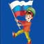

Поддержка юных спортсменов
Фонд оказывает материальную поддержку юным спортсменам, у которых нет возможности приобрести экипировку, поехать на соревнования или оплатить медицинский осмотр.
В 2018 году Фонд учредил спортивную стипендию для подопечных спортсменов – боксеров, которые показывают высокие результаты.
В спортивно-патриотическом клубе «Первый», открытом Фондом, дети из малоимущих, многодетных семей занимаются бесплатно.
Мы помогаем детям верить в себя и в то, что их государству небезразлично их будущее!
Развитие спорта в регионе и стране
Мы проводим соревнования и спортивно-массовые мероприятия, заключаем соглашения о сотрудничестве со спортивными комплексами и федерациями единоборств в городе и области.
Фонд ежегодно проводит турнир по боксу для непрофессионалов по боксу «Черно-белые воротнички», а также благодаря нашей деятельности межрегиональные соревнования по самбо им. О.В. Костенникова приобрели статус всероссийских.
Мы регулярно принимаем участие в организации турниров и соревнований в Нижнем Тагиле.

Военно-патриотическое воспитание
Уроки мужества, экскурсии, встречи с ветеранами – мы стараемся привить молодому поколению чувство собственной значимости как будущего защитника своей страны, уважение к тем, кто выполнял и выполняет свой долг с честью.
В мае 2019 года БФ «Первый» учредил военно-патриотический отряд «Парусное», воспитанники которого будут проходить курс военной, спортивной подготовки: АРБ, альпинизм, подводная подготовка, стрельба из оружие, обучающие лекции, экскурсии и т.д. Такая подготовка поможет в поступлении в высшие военные учебные заведения и сделает из юношей достойных сыновей и защитников Родины.
Пропаганда здорового образа жизни и спорта
Мы привлекаем как можно больше людей: представителей различных областей деятельности для сотрудничества и участия в мероприятиях Фонда, наши мероприятия направлены на популяризацию и повышение престижа ведения здорового образа жизни и занятий спортом.
Помощь детским учреждениям
Помощь детским садам, школам – одно из важных направлений деятельности Фонда.
Фонд провел ремонт зала бокса в районе Рудника III Интернационала, где на данный момент бесплатно занимаются подопечные Фонда.